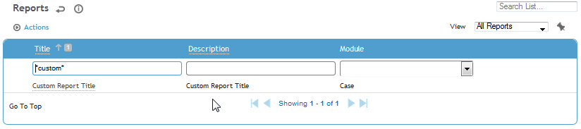
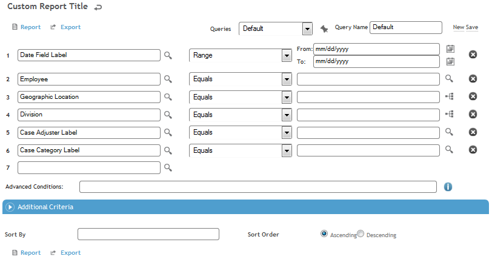

5.3.2 Viewing and Using a Custom Report
To use a custom report that has been added to the Reports list:
- Navigate to Business Intelligence > Reports.

The report is listed under the module that was selected when it was created.
- Select the report. The parameter screen for the report is displayed.

3. Enter appropriate search criteria for the report query, and then click Report to run the query.